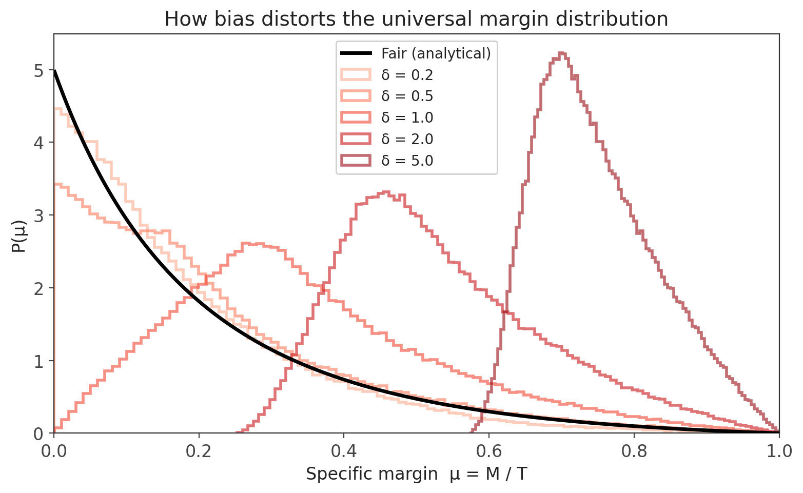
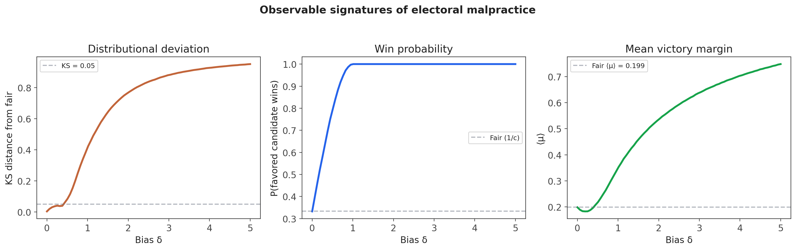
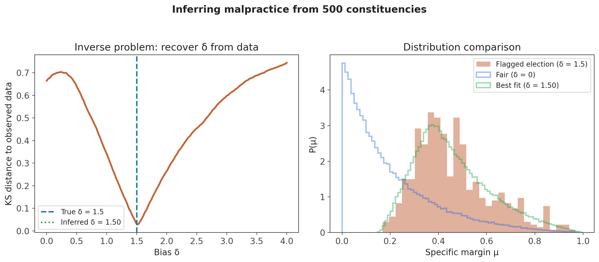
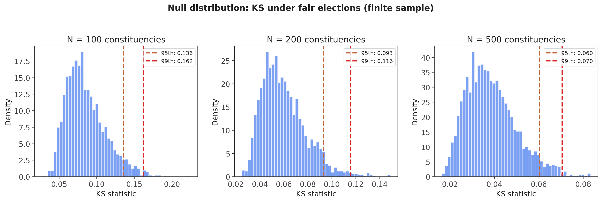

The Random Voting Model: draw c random weights, normalize to probabilities, generate multinomial votes. A null model with zero parameters.
The specific margin $\mu = M / T$ (winner–runner-up gap divided by total votes) follows a universal distribution $P(\mu)$ that depends only on $c$, not on turnout, geography, or political system.
Validated across 34 countries, from Indian state elections to European parliamentary races.
Current fraud detection methods — Benford's law, Klimek fingerprinting — lack a principled null model. They detect anomalies relative to ad hoc expectations.
The RVM provides exactly what's missing: a parameter-free theoretical prediction for what fair elections look like.
The logic is simple:
This turns fraud detection from a pattern-matching exercise into a principled statistical test with a well-defined null hypothesis.
Standard RVM: weights $w_i \sim U(0,1)$, normalize $\rightarrow$ probabilities
Biased RVM: $w_1 \rightarrow w_1 + \delta$ before normalization
$\delta = 0$ recovers the fair election. $\delta > 0$ gives candidate 1 a systematic advantage.


Given an observed election with $N$ constituencies, compute the empirical margin distribution.
Sweep $\delta$ in the biased RVM, find $\delta^*$ that minimizes the KS distance to the observed data.
$\delta^*$ is a quantitative malpractice index:
Continuous, interpretable, and grounded in a principled null model.

With $N = 500$ constituencies, sampling noise alone produces non-zero KS distance even for perfectly fair elections.
Solution: build a null distribution of KS statistics under the fair RVM at the actual sample size.
Proper hypothesis test: reject $H_0(\text{fair})$ if observed KS exceeds the 95th percentile of the null distribution.

Uniform $\delta$ vs constituency-specific $\delta_i$ — what if only some races are manipulated while others remain fair?
Which candidate gets the edge? Can we infer the identity of the favored candidate, not just the magnitude of bias?
The $T^{-0.73}$ convergence to universality interacts with bias detection — how does finite size affect power?
Apply to elections with documented irregularities — do known problematic elections produce elevated $\delta^*$?
Connection to Schrödinger bridges: model how margin distributions evolve between elections, linking bias to dynamical processes.